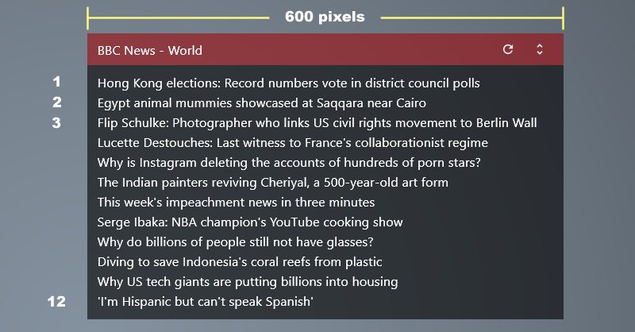
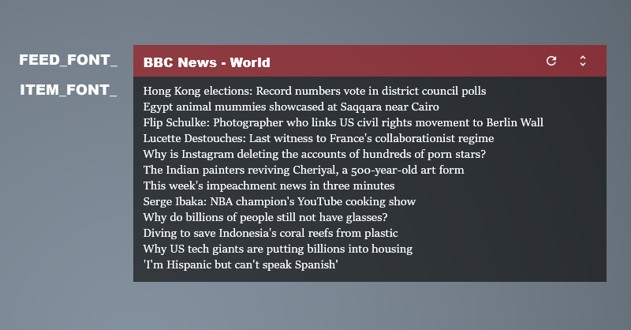

You can modify [Variables] section in the Skin.ini file.
More details... Skins\FeedMoe\@Resources\About.txt
More details... Skins\FeedMoe\@Resources\About.txt
3 steps to create your custom feed skin.
- Copy and rename the folder under the Skins\FeedMoe\
- Click [Refresh all] button, select Skin.ini and click [Edit] button.
- Edit and save Skin.ini.
Skin.ini | SKIN_WIDTH, MAX_ITEMS
SKIN_WIDTH=600MAX_ITEMS=12

Skin.ini | FEED_FONT_NAME, ITEM_FONT_NAME
FEED_FONT_NAME=Arial BlackFEED_FONT_WEIGHT=900ITEM_FONT_NAME=Sitka Display

Skin.ini | lastest 1 story
MAX_ITEMS=1Make background transparent and hide header

Skin.ini file Comments
You can modify [Variables] section in the Skin.ini file.Single line comments start with
;.;this comments is ignored by Rainmeter.;SKIN_WIDTH=280 This variable will be ignored too.[Variables] section and defaut variables.
SKIN_WIDTH=280 is defined in Skins\FeedMoe\@Resources\Variables.inc as default variable.Default variables are overridden by [Variables] section in each Skin.ini file.
More details... Skins\FeedMoe\@Resources\About.txt